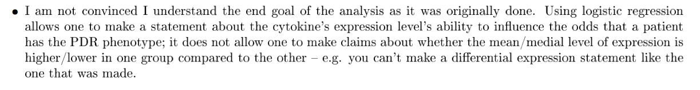
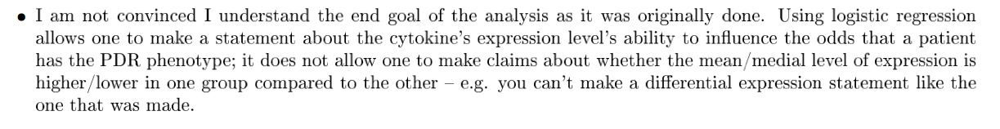

Reverse Phase Protein Lysate Microarrays
(and why we might not need proportional odds logistic regression models to analyze them… yet)
Andrew Borgman // VARI Bioinformatics Core

But I was paywalled :(
That is correct - the data can be used "as is". All values have been negative control subtracted, filtered for quality (spot replicate CV's etc. - that is why some values are missing) and normalized by total protein input. The later endpoints are faced with increasing data noise due to the amount of lysate that was available for printing. We had initially planned for 50 slides, so anything beyond is stretching the input. That doesn't mean the data is no good - but you will see more values missing


 *
* Still have outlier issues… are they better?
* Could potentially get "tricked" by your statistics
* Dependent on sample size/how your sample is stratified


 



/